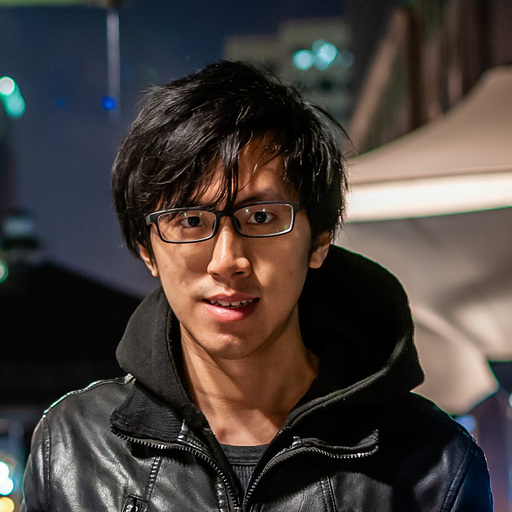

I am an Applied Scientist at Amazon, working on human-centered artificial intelligence. My research advances the explainability and fairness of AI systems through human-algorithm collaboration, drawing on machine learning and human-computer interaction.
I received a Ph.D. in Computer Science at the University of Minnesota, co-advised by Professors Haiyi Zhu and Steven Wu. My academic work looks at how people understand and oversee algorithmic systems in high-stakes settings such as child welfare, and how the fairness views of affected communities can be incorporated into these systems.
At Amazon, I apply this human-centered approach to large-scale generative AI. Among other projects, I worked on trust and safety for Amazon Rufus (now Alexa for Shopping), Amazon's generative AI shopping assistant.
My research interests include: